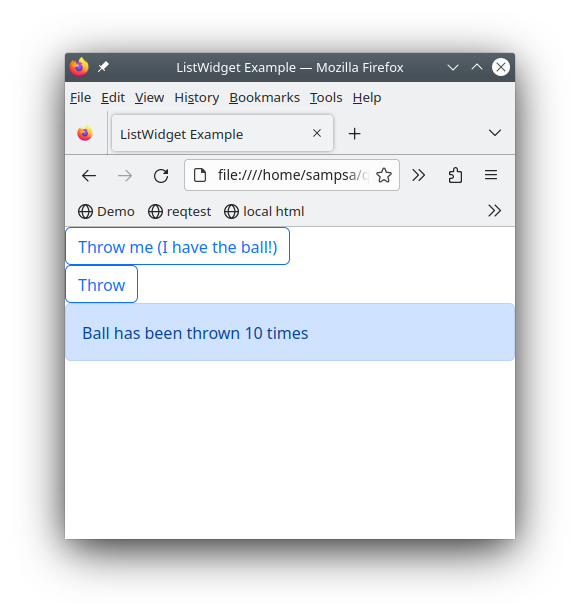

Qt-like Widgets and Signals¶
Let’s play ball¶
In CuteFront, there is only plain html and javascript.
Javascript and html are in the same .html file, while each widget class is
in a separate .js file.
A code example tells more than thousand explanatory words, so let’s get straight to it with some javascript:
import { BallPlayer, BillBoard } from './ballplayer.js';
var alex = new BallPlayer("alex");
var bob = new BallPlayer("bob");
var billboard = new BillBoard("billboard")
// ball from alex to bob
alex.signals.throw_ball.connect(
bob.catch_ball_slot.bind(bob)
)
// ball from bob to alex
bob.signals.throw_ball.connect(
alex.catch_ball_slot.bind(alex)
)
// inform billboard about the game
// alex throws
alex.signals.throw_ball.connect(
billboard.ball_throw_slot.bind(billboard)
)
// bob throws
bob.signals.throw_ball.connect(
billboard.ball_throw_slot.bind(billboard)
)
// give ball initially to alex
alex.catch_ball_slot()
Here we have instantiated two widgets, namely, Bob
and Alex, from the same widget class BallPlayer. There’s yet another widget
instantiated, billboard from the class Billboard that reports the ballgame
between alex and bob.
Widget classes are read from separate .js files from a widget library.
Signals from Bob and Alex are connected to the slot of the other player and also to the billboard so that it gets updated: the callback chains become obvious and easy to read, thanks to the signal/slot syntax.
The html part (in the same file), looks like this:
<div id="alex"></div>
<div id="bob"></div>
<div id="billboard"></div>
Quite simple, right? No templating languages or obscure onclick callbacks to- and fro
between html and javascript.
Only the basic layout is described by html, while all other complex / interactive stuff
is implemented by the widget code. Note how we “hooked” into the <div> elements
in the JS part by using their unique id.
Here is an image of the working web-page:
You can also try it on-line in here
Anatomy of a Widget¶
Let’s take a look at the BallPlayer widget class:
class BallPlayer extends Widget {
// A widget you can throw ball with
// to another widget
constructor(id) {
super();
this.id = id;
this.createElement();
this.createState();
}
// UP: signals
createSignals() {
this.signals.throw_ball = new Signal(); // sends the ball to another widget
}
// IN: slots
catch_ball_slot() { // receive a ball
this.log(-1, "catch_ball_slot")
this.has_ball = true
this.setBall()
}
createState() {
if (this.element == null) {
this.err("no html element")
return
}
this.has_ball = false // the only state variable
// initialize to not having a ball
}
createElement() {
this.element = document.getElementById(this.id)
if (this.element == null) {
this.err("could not find element with id", this.id)
return
}
this.element.innerHTML=`
<button class="btn btn-outline-primary">Throw</button>
`
this.button=this.element.getElementsByTagName("button").item(0)
this.button.onclick = (event) => {
this.throwBall()
}
}
throwBall() {
if (!this.has_ball) {
// we don't have the ball..
return
}
this.has_ball = false
this.setBall()
this.signals.throw_ball.emit()
}
setBall() { // changes html element appearance according this.has_ball
if (this.has_ball) {
this.button.innerHTML=`Throw me (I have the ball!)`
this.button.className="btn btn-outline-primary"
}
else {
this.button.innerHTML=`Throw`
this.button.className="btn btn-outline-primary"
}
}
} // BallPlayer
All widgets define createSignals, createState and createElement methods.
createSignalsdefines the signals this widget emits.createStatedescribes the internal state variables of the widget.createElementhooks into the html code and gets an element handle to the widget’s html element. It is also responsible in producing any additional html elements.Slots methods have names ending in
_slot. This is where the signals from other widgets are connected to.
To put it simply, slot methods change the internal state of the widget
(created initially in createState), and emit signals to other widgets.
Taking a look into createSignals and the _slot methods, we can see at a single glance the API of the widget.
Before going full throttle into creating your own interative pages and widgets, please look at the Creating Widgets section for common techniques and pitfalls (in javascript, there are quite some).